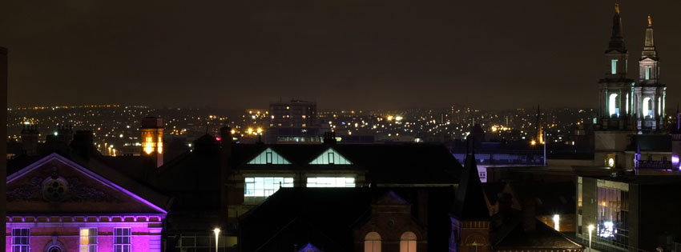

LEEDS: Exploring its History through On-Line Resources

(Image: Richard Thomas 2014)
The city of Leeds in West Yorkshire grew at a remarkable rate during the nineteenth century
largely due to playing a key part in the Industrial Revolution within the UK. With the
growing population, industrialisation and civic development, the city expanded across the
landscape. Amongst other things, this resulted in a treasure-trove of Victorian architecture.
This website aims to highlight a number of on-line resources that document the expansion and
history of the city, with a particular focus on providing a mapping tool to explore the
distribution of the architectural legacy left behind.
- A collection of online resources of historical analysis and photographs.
- An interactive tool to give an overview of the development of the city as seen through
a small selection of historic maps. Details are also given of more extensive online UK mapping
resources.
- Interactive mapping of all the "listed" historic buildings of the Leeds district
- Links to detailed information on each one from English Heritage, plus
photographs for the vast majority.
- Ratings are also shown for those buildings that are
currently considered "at risk" by Leeds Civic Trust.
- Mapping of the locations of the blue plaques installed by Leeds Civic Trust
to celebrate famous people and buildings in the Leeds area
- (Note: this part of the website is a link to a slightly modified version of
a previous GIS MSc assignment)
Acknowledgements
- Listed Building data was supplied by English Heritage, both through the government open
data portal (data.gov.uk) and on-demand through direct linking to query output pages on
their websites.
- Additional listed building data was extracted from a 2005 snapshot of
the English Heritage database stored in the National Archives.
- "Heritage at risk" data was supplied by Leeds Civic Trust.
- Jacqueline Banerjee at Victorian web kindly gave encouragement and permission
for reasonable use of material from that website, even if time precluded me
developing that aspect further.
- Rose Gibson at Leeds City Council gave advice and clear instructions to apply for
permissions for use of data from the Leodis websites.